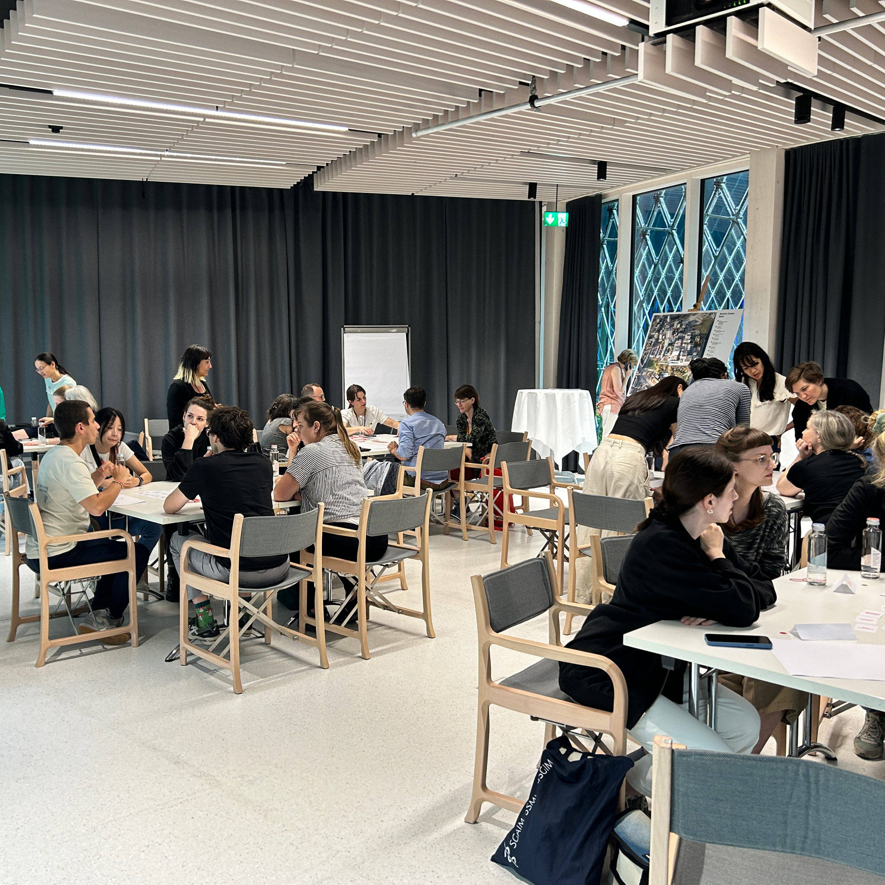
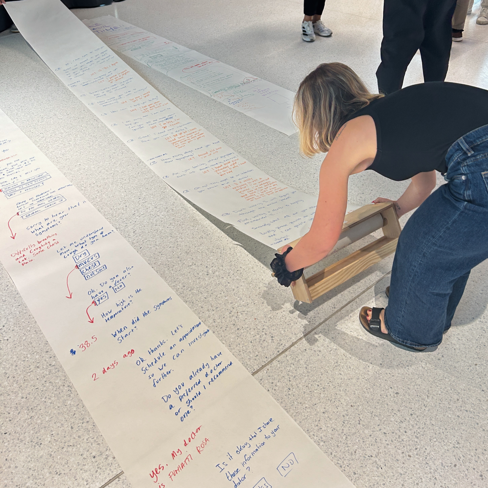
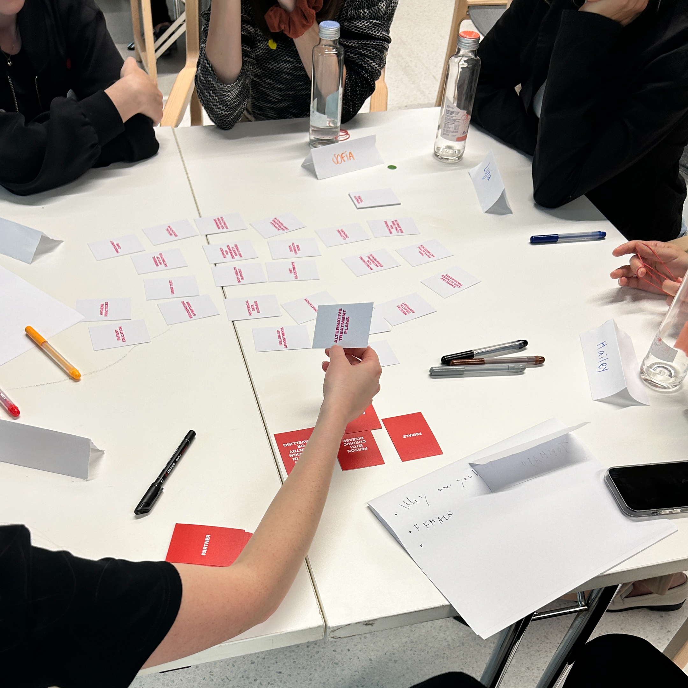
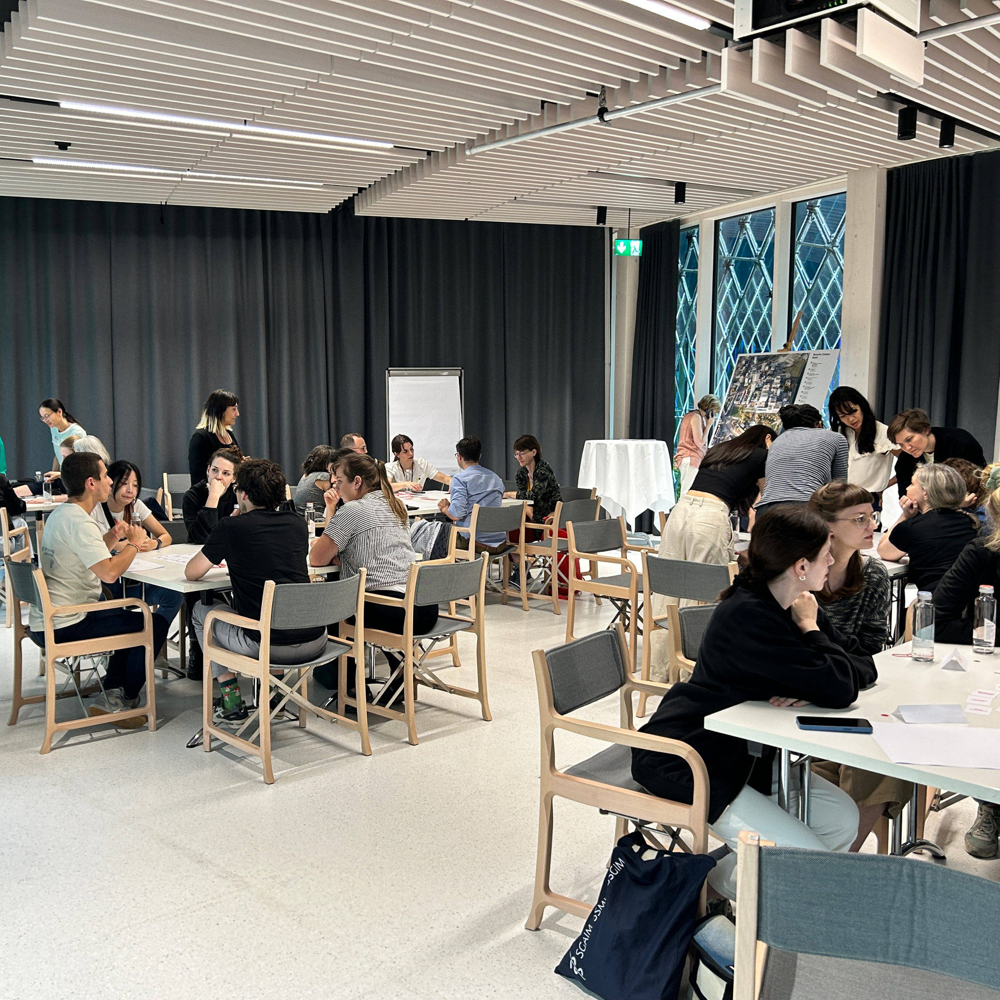
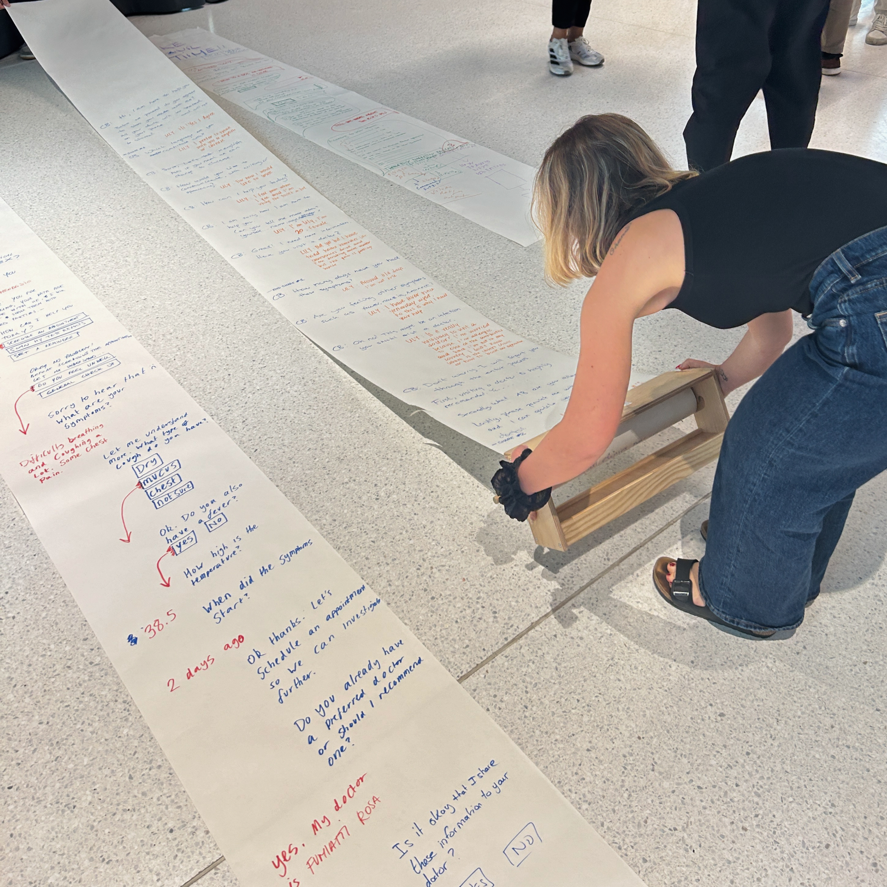
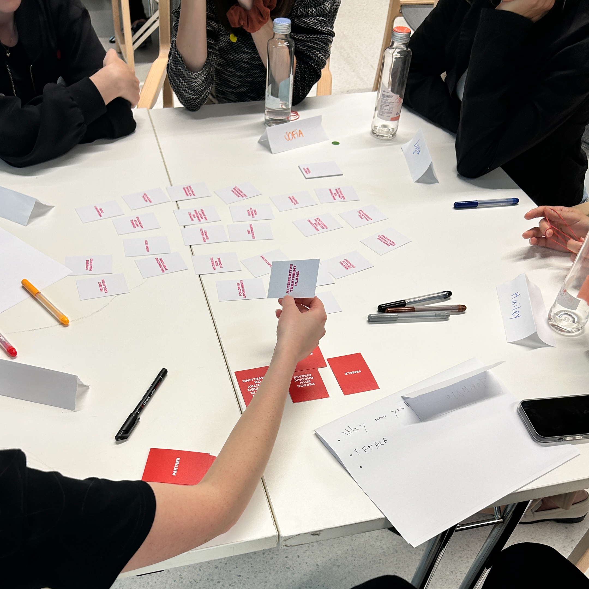

with
This format was designed by the MAKEAWARE! Team. The activity was organised in collaboration with other partners of the Spearhead project and hosted at the Novaris Pavilion in Basel.
To address the challenge of antimicrobial resistance, the OpenHealth Datathon brought together citizens, patients, and professionals at Novartis Pavillon. In a half-day workshop, participants worked in teams to design a chatbot conversation, transforming complex medical data into an accessible dialogue format that connected personal experiences with scientific perspectives and suggested new ways to support both doctors and citizens.
The OpenHealth Datathon was a half-day event designed to address antimicrobial resistance (AMR) by bringing together a diverse group of participants. Forty attendees took part, including people with lived experience of AMR, healthcare and infectious disease experts (doctors, general practitioners, PhD students, medical anthropologists), and students from technology and design. Working in multidisciplinary teams, participants collaborated on designing healthcare conversations around antibiotic prescription, consumption, and resistance.
These dialogues were intended as scenarios to be used by a future voice-based chatbot, allowing participants to shape the content and flow of interaction rather than the technical system itself. The activity also aimed to outline a methodology for data collection and identify key data points, ensuring that stakeholder priorities and experiences informed the exploration of innovative solutions to real-world healthcare challenges
 





This format was designed by the MAKEAWARE! Team. The activity was organised in collaboration with other partners of the Spearhead project and hosted at the Novaris Pavilion in Basel.
After an introduction to the project and research topic, participants engaged in a structured set of activities to design chatbot conversations addressing antibiotic-related issues. Working in groups, they used physical cards to explore patient profiles and scenarios. Each group first defined a specific patient type and needs, drawing on pre-made or customisable cards informed by real stories collected in previous workshops. A second set of role-based cards was then used to define the chatbot’s function in responding to those needs.
Using an A3 sheet, participants developed scenarios of chatbot–patient interaction, guided by prompts about the patient’s environment, emotions, goals, and constraints. They then sketched full conversations on a paper roll, including onboarding steps such as capabilities, consent, and data handling. Groups also considered how the chatbot should manage user inquiries, unexpected questions, rude behaviour, emotional support, mental health concerns, and urgent medical situations, while defining its personality, empathy level, and follow-up processes.
At the end of the workshop, each group shared their designs by performing the conversation, explaining their thought process, design choices, and insights.
↗ Activity presentation
↗ User's cards
↗ Needs' cards
↗ Desgining the conversation instruction sheet
This format was designed by the MAKEAWARE! Team. The activity was organised in collaboration with other partners of the Spearhead project and hosted at the Novaris Pavilion in Basel.